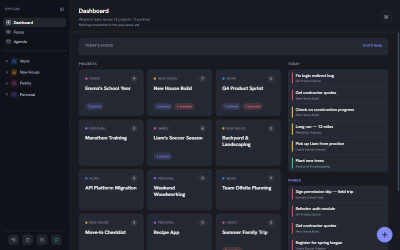
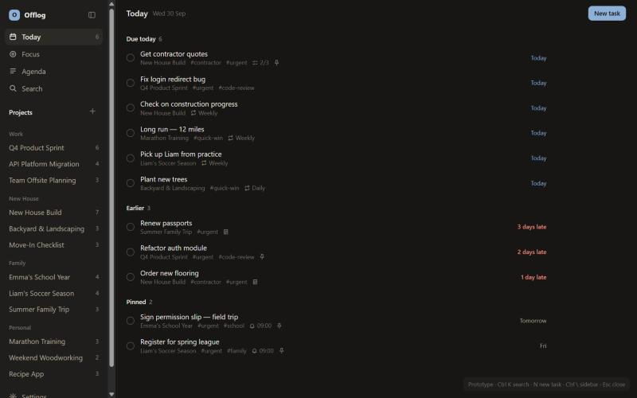
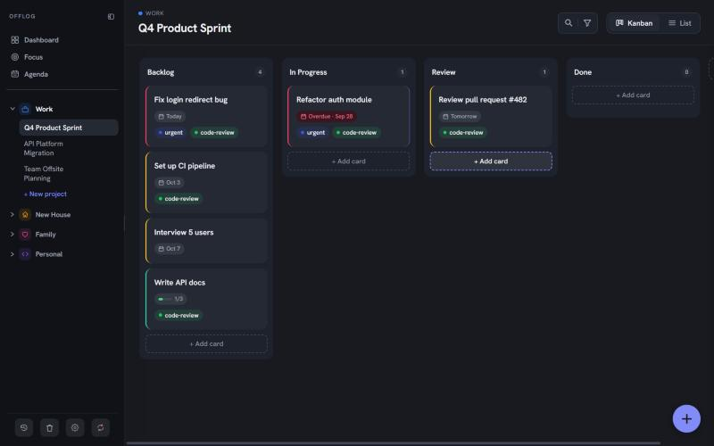
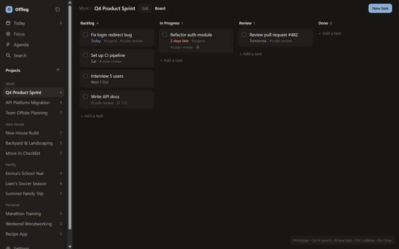
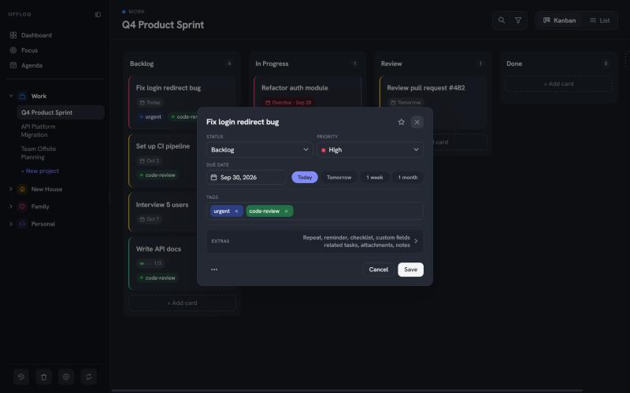
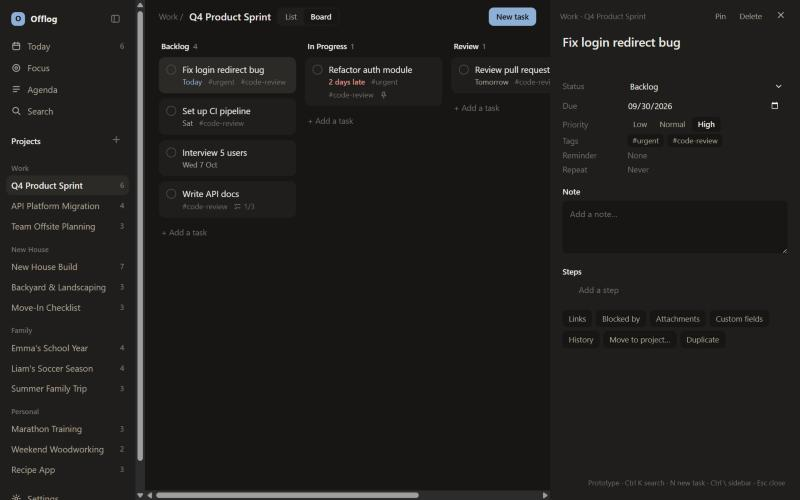

Before (main) and after (prototype), same data, same size
Home

main: Dashboard, a grid of project cards

prototype: Today, a list of what is due
Board

main

prototype
Opening a task

main: a form in a popup

prototype: a pane beside the board